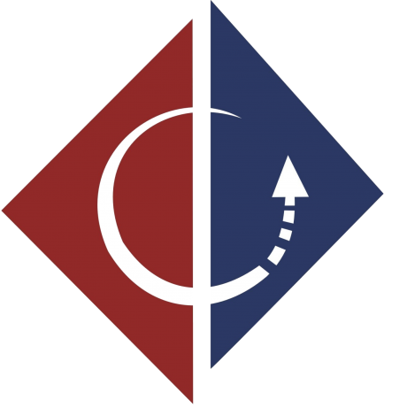

<ion-view view-title="Colabore.ufpe">
    <ion-content class="padding" id="corpo">
      <ion-slide-box on-slide-changed="slideHasChanged($index)">
        <ion-slide>
          <div class="slide1">      
            <i class="icon ion-ios-people first-icon"></i>
            <h1>Colabore.ufpe</h1>
            <h4>Projeto</h4>
          </div>
        </ion-slide>
        <ion-slide>
          <div class="slide2">                
            <h3>Bem-Vindo</h3>
              <p>Apoiador</p>           
          </div>
        </ion-slide>
        <ion-slide>
          <div class="slide3">
            <div class="box">
              <h3>
                ...este é seu teste prático para Front-End Engineering Design do <a target="_blank" href="https://www.ufpe.br/nti/">NTI</a> da <a target="_blank" href="https://www.ufpe.br/">UFPE</a>...
              </h3>  
            </div>            
          </div>
        </ion-slide>
         <ion-slide>
          <div class="slide4">
            <div id="text">
              <p>
                Este projeto foi desenvolvido com <a target="_blank" href="http://ionicframework.com/">Ionic</a>, um avançado framework HTML5 para aplicativos híbridos móveis. Edite livremente o conteúdo deste projeto. Na pasta <code>www/templates/</code> você econtra os modelos HTML. Este modelo, por exemplo, encontra-se em <code>www/templates/tab-fiscalizar.html</code>. Além disso você pode editar o arquivo <code>www/css/style.css</code> para personalizar o layout.
              </p>
              <p>
                Toda regra de negócio deve ficar na pasta <code>www/js</code>. Consulte a <a target="_blank" href="http://ionicframework.com/docs/">documentação do Ionic</a> e <a target="_blank" href="https://angularjs.org/">AngularJS</a> para lhe ajudar nesta tarefa. Se você precisar de ajuda com sua aplicação, junte-se a comunidade do Ionic em <a target="_blank" href="http://forum.ionicframework.com" target="_blank">Ionic Fórum</a> ou envie suas dúvidas para nosso e-mail. Siga nosso projeto no <a target="_blank" href="https://github.com/nti-ufpe/colabore">GitHub</a> e a partir dele crie um branch para você.
              </p>
              <p id="final-msg">
                Estamos feliz por você estar participando da nossa seleção, boa sorte!
              </p>
            </div>    
            <div id="footer">
              
                            
              <p>Universidade Federal de Pernambuco</p>
              <p>Núcleo de Tecnologia da Informação</p>
              <a id="responsable" href="#">Responsável: Thiago Bezerra</a>
            </div>    
          </div>
        </ion-slide>
      </ion-slide-box>  
  </ion-content>
</ion-view>